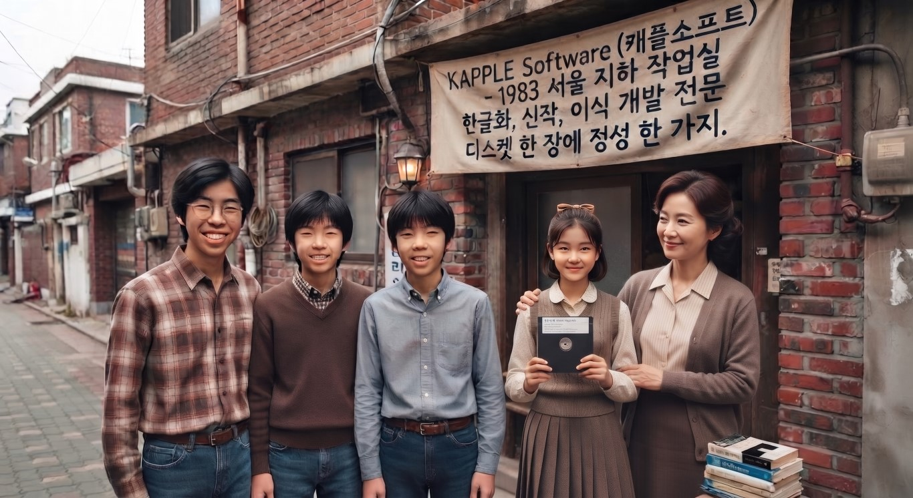

KAPPLE ][는 한국의 Apple II plus 호환기입니다. 저는 1983년 무렵, 국민학교에 다니던 시절에 이 컴퓨터를 구입했습니다. 제 인생 첫 컴퓨터였고, 그 위에서 수많은 게임을 즐겼으며 AppleSoft BASIC으로 프로그래밍을 배우고, LISA 어셈블러로 조금의 어셈블리도 익혔습니다.
이 페이지는 그 기억과, Apple II 관련 자료·코드·문서를 모아 두기 위한 공간입니다.
저를 끌어다 컴퓨터에 놓아 주세요!
애플2 카페
한국 애플2 컴퓨터 사용자 모임 - 네이버 Apple2 Cafe 회원입니다. 닉네임은 KAPPLE 입니다.
캐플소프트(KAPPLE Software)는 1983년 서울의 작은 지하 작업실에서 문을 연 Apple II 전용 소프트웨어 회사입니다. 그 무렵 가정과 학교에는 애플2 호환기가 들어오기 시작했는데, 그 화면을 채울 프로그램은 턱없이 부족했습니다. 직원은 세 명이었고, 낮에는 디스켓을 복사하고 밤에는 코드를 짰습니다.
캐플소프트는 세 가지 일을 합니다.
한글화 — 해외 명작의 메뉴와 대사를 한글로 옮기고, 화면에 한글 글꼴을 입힙니다.
신작 — 애플2에 없던 보드게임과 생활 속 놀이를 BASIC과 어셈블리로 처음부터 만듭니다.
이식 — MSX나 다른 기종에서 돌던 작품을 애플2 플러스에 맞춰 옮겨 싣습니다.
디스켓 한 장에도 밤을 새운 흔적이 남습니다. 캐플소프트의 원칙은 단순합니다. 디스켓 한 장에 정성 한 가지.

이 회사는 가상의 회사입니다
여기까지 읽으셨다면 조금 놀라셨을지도 모르겠습니다. 캐플소프트는 실제로 존재하지 않는 가상의 회사입니다. 1983년의 서울에도, 지금의 어디에도 이 이름으로 등록된 회사는 없습니다.
애플2 소프트웨어를 소개하는 레트로풍 가상 광고를 꾸며보려고 지어낸 이름입니다. 저장소에 올라온 한글화 게임, 자작 소프트웨어, 포팅 프로그램들은 모두 실제로 동작하는 파일들이지만, ‘캐플소프트’는 이 프로그램들을 진짜 옛날 소프트웨어 회사의 출시작처럼 설정해 보려고 재미로 만든 가상의 레이블입니다.
![KAPPLE ][ 컴퓨터와 모니터](assets/kapple-ii-plus-about.png?v=2)